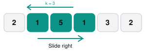
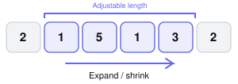
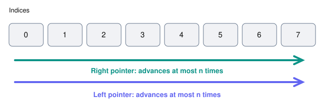

Java • Data Structures & Algorithms • Visual Explanations • Interactive Animations • Interview Preparation
Sliding Window is one of the most important algorithmic techniques for coding interviews, especially for problems involving arrays, strings, subarrays, substrings, frequency counting, and optimization.
This guide progresses from absolute beginner to advanced interview problems, including the underlying mathematics, implementation patterns, complexity analysis, edge cases, and complete Java programs.
Sliding Window is an algorithmic technique that processes a contiguous portion of an array or string by maintaining a range of elements, called a window, and incrementally updating information as that range moves.
Instead of recalculating information for every possible subarray or substring, we reuse information from the previous window.
For example, consider:
Array = [2, 1, 5, 1, 3, 2]
Window size k = 3We want the maximum sum among all contiguous subarrays of length 3.
A brute-force implementation calculates:
[2, 1, 5] Sum = 8
[1, 5, 1] Sum = 7
[5, 1, 3] Sum = 9
[1, 3, 2] Sum = 6
Maximum = 9The sliding window optimization is to compute the first window once, then update its sum by subtracting the element leaving the window and adding the element entering.
Snext=Scurrent−A[left]+A[right+1]
WINDOW MOVEMENT — FIXED SIZE 3
Step 1
8
2
1
5
1
3
2
Step 2
7
2
1
5
1
3
2
Step 3
9
2
1
5
1
3
2
Step 4
6
2
1
5
1
3
2
Each successive window removes one element on the left and adds one on the right. The maximum window is [5, 1, 3].
Why is Sliding Window efficient?
Suppose an array contains n elements and we need to find the maximum sum of any k consecutive elements.
| Approach | Time complexity | Extra space |
|---|---|---|
| Brute force: recalculate each window | O(nk) | O(1) |
| Sliding window: reuse previous sum | O(n) | O(1) |
For n=1,000,000 and k=1,000, the brute-force solution may perform roughly a billion additions, whereas sliding window requires only a few million arithmetic operations.
The important principle is:
Don't calculate the same information repeatedly when the result of the previous window can be updated incrementally.
Fixed-size window

The window always contains exactly k elements.
Typical: maximum sum of k elements, moving average, anagram detection.
Variable-size window

The window expands or contracts to satisfy a condition.
Typical: longest unique substring, shortest valid subarray, at most k distinct characters.
Fixed-size window
A fixed-size window maintains the invariant:
right−left+1=k
Basic Java pattern:
for (int right = 0; right < n; right++) {
// Add arr[right] to the window.
if (right >= k) {
// Remove arr[right - k].
}
if (right >= k - 1) {
// Process the complete window.
}
}Variable-size window
A variable-size window adjusts its length dynamically.
The usual technique maintains two pointers, left and right.
int left = 0;
for (int right = 0; right < n; right++) {
// Expand: add arr[right].
while (/* window violates condition */) {
// Shrink: remove arr[left].
left++;
}
// Process the valid window.
}This specific template keeps the window valid after shrinking, which is ideal for many longest-window problems.
For minimum-window problems, the loop often works in the opposite way: shrink while the window remains valid, recording the answer before removing elements.
An invariant is a property that must remain true at a defined point in every iteration.
Typical invariants include:
- The window always contains exactly
kelements. - The window contains at most
kdistinct characters. - The window contains no duplicate characters.
- The sum of the window is less than a threshold.
- A monotonic deque contains candidate indices in decreasing order of their values.
A correctly chosen invariant is often more important than the Java code itself.
The four operations
1
Expand
Add right
2
Validate
Check rule
3
Shrink
Remove left
4
Record
Update answer
The exact ordering changes by problem. In particular, whether to update the answer before or after shrinking depends on the invariant.
Use the animation to observe how left, right, the current window, and the maintained state change at each step.
Code execution is disabled for this workspace.
What to observe
In the fixed-size animation, left and right move together, so the window length never changes.
In the longest-unique-substring animation, right expands the window and left moves only when a duplicate makes the window invalid.
In the minimum-length animation, the window first expands until its sum reaches the target, then shrinks as much as possible while still meeting the target.
These represent three of the most useful sliding window behaviors in interviews.
Use this table to recognize the correct algorithm quickly.
| Pattern | Typical problem | Main data structure | Time |
|---|---|---|---|
| Fixed sum | Max sum of k elements | Running sum | O(n) |
| Fixed frequency | Anagram detection | Frequency array/map | O(n) for fixed alphabet |
| Variable longest | Longest substring without repeats | Set / last-seen map | O(n) |
| Variable shortest | Minimum size subarray sum, positive numbers | Running sum | O(n) |
| At most k | Longest substring with k distinct chars | Frequency map | O(n) |
| Exactly k | Count subarrays with k distinct values | Two at-most windows | O(n) |
| Replacement budget | Max consecutive ones III | Zero counter | O(n) |
| Product constraint | Subarray product below k, positive numbers | Running product | O(n) |
| Monotonic max/min | Sliding window maximum | Monotonic deque | O(n) |
| Negative numbers | Shortest subarray sum at least K | Prefix sum + deque | O(n) |
| Sliding median | Median of every k elements | Two multisets / balanced trees | O(n log k) |
| Pattern matching | Concatenation of all words | Frequency maps | O(n × word length) in a straightforward implementation |
Important: Sliding Window is not always O(n). Its complexity depends on how efficiently window state is updated and on the data structures used.
The 37 Java coding interview problems, each with its description and a complete Java 25 program, are on a separate page: Sliding Window — Java Coding Interview Problems.
One of the most common interview questions is:
A sliding window contains a
forloop and an innerwhileloop. Why is the complexity O(n), not O(n²)?
Consider:
int left = 0;
for (int right = 0; right < n; right++) {
while (invalidWindow(left, right)) {
left++;
}
}The important fact is that left never moves backward.
Over the entire execution:
rightincrements at mostntimes.leftincrements at mostntimes.
Therefore, the total pointer movement is at most:
n+n=2n
So:
T(n)=O(n)
This is amortized analysis.
Pointer movement over the entire algorithm

Even if the left pointer advances many times in one iteration, it has only n positions to traverse in total.
This argument requires efficient work per pointer movement. If each movement performs an O(k) operation, such as scanning a large map or sorting the window, the total complexity changes.
Formal amortized proof
Let R be the total number of right-pointer increments and L the total number of left-pointer increments.
Because both pointers are monotonic:
0≤R≤n
0≤L≤n
If each increment involves constant-time work:
T(n)≤c1R+c2L+c3n
T(n)≤(c1+c2+c3)n=O(n)
This is why the inner while loop does not automatically make the algorithm quadratic.
while is often necessary instead of ifConsider the minimum-size subarray sum problem:
while (sum >= target) {
best = Math.min(best, right - left + 1);
sum -= nums[left++];
}Why not use if?
Suppose:
nums = [1, 1, 1, 10]
target = 10After adding 10:
Window = [1, 1, 1, 10]
Sum = 13If you shrink only once, you obtain:
[1, 1, 10]
Sum = 12But that is still valid and can be shortened further:
[1, 10] Sum = 11
[10] Sum = 10The optimal result has length 1.
A while loop keeps shrinking until further shrinking would violate the condition.
Important nuance: Some longest-window solutions can use a single if deliberately, with a different invariant or a deferred-shrinking argument. That is not a universal replacement for while. Use while when correctness requires fully restoring the stated invariant.
Template A — Longest valid window
Use this when the goal is the maximum length satisfying a condition.
int left = 0;
int best = 0;
for (int right = 0; right < n; right++) {
// Include element at right.
add(right);
// Restore validity.
while (!valid()) {
remove(left);
left++;
}
// The current window is valid.
best = Math.max(best, right - left + 1);
}Examples: longest unique substring, fruit baskets, max consecutive ones III, at most K distinct characters.
Template B — Shortest valid window
Use this when the goal is the minimum length satisfying a condition.
int left = 0;
int best = Integer.MAX_VALUE;
for (int right = 0; right < n; right++) {
add(right);
// Window is valid: try to shorten it.
while (valid()) {
best = Math.min(
best, right - left + 1);
remove(left);
left++;
}
}Examples: minimum window substring, minimum size subarray sum with positive elements.
Template C — Count valid subarrays
When the constraint is hereditary under removing elements from the left, every suffix of a valid window is also valid.
int left = 0;
long count = 0;
for (int right = 0; right < n; right++) {
add(right);
while (!valid()) {
remove(left);
left++;
}
count += right - left + 1;
}Examples: at most K distinct values, binary subarrays with sum at most K, positive subarrays with product less than K.
The expression:
right−left+1
is especially important when counting subarrays.
Counting example
Suppose the current valid window is [2, 4, 3].
All valid suffixes ending at the current right index are:
[3]
[4, 3]
[2, 4, 3]There are three such subarrays, exactly equal to the window length.
The classic two-pointer method depends on a monotonic relationship between window changes and the constraint.
For example, with strictly positive numbers:
- Expanding a window increases its sum.
- Shrinking a window decreases its sum.
This permits safe decisions about when to expand and shrink.
With negative numbers, those properties no longer hold.
| Problem | Ordinary window? | Better approach |
|---|---|---|
| Minimum length with sum ≥ K, positive numbers | Yes | Two pointers |
| Minimum length with sum ≥ K, arbitrary integers | Not generally | Prefix sums + monotonic deque |
| Count subarrays with exact sum, binary array | Yes | At-most difference |
| Count subarrays with exact sum, arbitrary integers | Not generally | Prefix-sum frequency map |
| Maximum sum of exactly K elements, arbitrary integers | Yes | Fixed window |
| Longest substring without repeats | Yes | Last-seen indices / frequency map |
| Sliding maximum | Not with sum-style state alone | Monotonic deque |
| Sliding median | Not with a simple sum or deque | Balanced multisets / heaps |
These concepts overlap, but they are not identical.
| Technique | Central idea | Common use |
|---|---|---|
| Two pointers | Use two indices to traverse or partition data | Sorted pair sum, array merging, partitioning |
| Sliding window | Maintain information about a contiguous interval as it moves | Substring optimization, subarray constraints |
| Prefix sums | Precompute cumulative values to obtain range sums | Range-sum queries, arbitrary-integer exact-sum counts |
| Monotonic deque | Maintain undominated candidates in sorted order | Range max/min, constrained prefix sums |
| Binary search + window | Search a parameter while checking feasibility | Some optimization and answer-search problems |
Every sliding window algorithm uses an interval, commonly expressed using two pointers, but not every two-pointer algorithm is a sliding window.
For example, finding two numbers that sum to a target in a sorted array is a two-pointer algorithm, not normally classified as sliding window.
Mistake 1: Off-by-one errors
The inclusive window length is right - left + 1, not right - left.
Mistake 2: Updating the answer at the wrong time
In longest-valid-window problems, record the answer after restoring validity. In shortest-covering-window problems, record it before removing an element from a currently valid window.
Mistake 3: Forgetting frequency-map cleanup
When a count becomes zero, remove the key if map.size() is supposed to represent the number of distinct elements.
Mistake 4: Assuming all sliding windows are O(n)
Sorting every window, scanning all its elements repeatedly, or performing expensive map operations can increase complexity.
Mistake 5: Integer overflow
Sums, products, and subarray counts can exceed int. Use long where needed, especially for multiplication such as nums[right] * windowLength.
Mistake 6: Ignoring input assumptions
An algorithm for positive values may be wrong for negative values. An int[26] frequency array only works when the input really is restricted to the expected alphabet.
![Algorithm-selection decision tree: array or string problem; if not a contiguous range, consider other techniques. For a fixed range length, choose by what is maintained: running sum or frequency, monotonic deque for maximum or minimum, ordered multisets for the median. For a variable length with a monotonic condition: expand then shrink invalid for longest, expand then shrink valid for shortest, at-most counting or suffix counts for counting. Otherwise use prefix sums, a deque, a map or another approach.](../static/swindow-decision-tree.svg)
This decision tree is a guide, not a correctness proof. Even a monotonic constraint requires a careful invariant, and some optimization problems need transformations before a sliding window becomes applicable.
Work through the problems in this order. You can mark them as completed while studying.
Sliding Window mastery tracker
Practice implementing each solution without looking at the code.
0/37
Completed
Stage 1 — Fixed windows
0/9
Stage 2 — Variable windows
0/8
Stage 3 — Advanced counting
0/5
Stage 4 — Pattern matching and optimization
0/6
Stage 5 — Advanced data structures
0/9
Writing the optimal algorithm is only one part of a successful interview. Test its behavior at boundaries.
| Edge case | Example | What to verify |
|---|---|---|
| Empty input | [] | Return appropriate empty result or reject invalid k |
| Single element | [7], k=1 | Correct window length |
| Window equals array size | [1,2,3], k=3 | Exactly one window |
| Repeated values | [2,2,2,2] | Frequencies and duplicate handling |
| All distinct | [1,2,3,4] | Correct longest unique window |
| All zeros | [0,0,0] | Counting zero-sum subarrays |
| Negative numbers | [-2,3,-1,4] | Correct algorithm assumptions |
| No qualifying window | [1,1], target 10 | Defined impossible result |
| Duplicate required characters | t="AABC" | Required multiplicities |
| Large values | [2_000_000_000, 2_000_000_000] | Prevent overflow |
| K larger than n | n=2, k=5 | Correct validation |
| K equals zero | k=0 | Problem-specific behavior |
For Java solutions, pay particular attention to int overflow and whether the problem's alphabet justifies indexing directly into a fixed-size frequency array.
A strong sliding window solution should come with a clear explanation of four things.
1. Why is the window sufficient?
Explain what information the window stores and why all other information can be discarded.
2. Why is shrinking safe?
For example, in a nonnegative-array sum constraint, once a window exceeds a maximum permitted sum, increasing right cannot repair it. Removing elements from the left is therefore necessary.
3. Why does the algorithm find the optimum?
For longest-window problems, show that you consider the longest valid suffix ending at each right. For minimum-window problems, show that every feasible ending index is explored and that shrinking identifies its shortest valid starting position.
4. Why is the complexity O(n)?
Explain that each pointer moves forward at most n times. For monotonic deques, show that each index is inserted once and removed once.
Sliding Window — Quick Revision
| Question clue | Technique |
| Exactly K consecutive elements | Fixed window |
| Longest substring with a restriction | Expand, shrink when invalid |
| Shortest substring satisfying requirement | Expand, shrink while valid |
| Exactly K distinct / odd values | AtMost(K) − AtMost(K−1) |
| Count all valid subarrays | Add window length, if suffixes stay valid |
| Maximum/minimum in every window | Monotonic deque |
| Minimum length, arbitrary integer sums | Prefix sum + deque |
| Exact sum, arbitrary integers | Prefix sum + HashMap |
| Median in every window | Two balanced multisets |
| Pick from both ends | Transform to retained middle window |
Five formulas worth memorizing
Fixed window length
length=right−left+1
Fixed window sum update
S′=S−outgoing+incoming
Count subarrays with exactly K of something
Exactly(K)=AtMost(K)−AtMost(K−1)
Count valid subarrays ending at right
New count=right−left+1
Subarray sum using prefix sums
sum(i,j)=P[j+1]−P[i]
The most important skill is not memorizing all 37 implementations. It is recognizing the underlying window invariant, deciding when information enters and leaves the window, and understanding why that movement preserves correctness.
Once those principles are familiar, many seemingly different interview problems reduce to a handful of reusable techniques.
If you want, I can:
- Add monotonic deque pattern with code and examples
- Explain minimum covering window and exact counting
- Provide complete Java code for sliding window problems in ascending difficulty